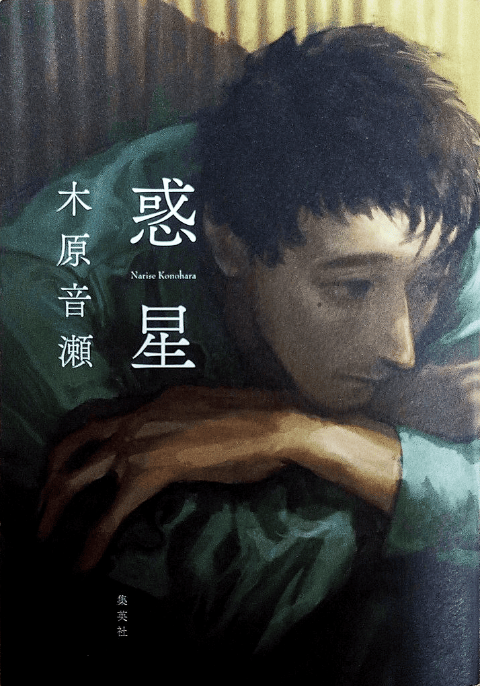

ジブンは「宇宙人」だ。
あれはおかあさんじゃない。きっとそうだ。
だって、おあかさんは あんな顔しない。
独り身男性の生活を描いた長編小説です。
この小説は全てが主人公の言葉で展開されています。
地の文さえも口語的表現が用いられており、読んでいると彼の頭の中をそのまま見せられているような感覚になります。
主人公には「何かしらの発達障害を抱えているのではないか」と感じさせるような言動が多く見られます。
彼の言葉は拙く、主観的です。真実は読者が考え、整理していくことでしかわからない作りになっています。
自分の解釈が合っているのかどうか、それを確かめる術はありませんが、だからこそ彼の生き様に様々な感情を抱くことができます。
展開は終始シリアスですが、主人公だからこそ感じれるユーモアや、彼に振り回される同居人なども魅力的です。
苦しい気持ちになるお話で、気軽に人に勧められるような作品ではありませんが、独特な作風で感じられる無二の面白さをぜひ感じて欲しいです。
ひとことコメントを見る
表紙に惚れて買った本でしたが、近年読んだ中ではダントツで心に残っている作品です。
いろいろ衝撃があったのですが、読後はひたすらに辛い気持ちになりました。
でもそのなんとも言えない後味が忘れられないんです…